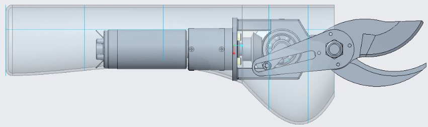
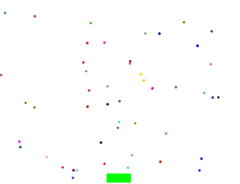
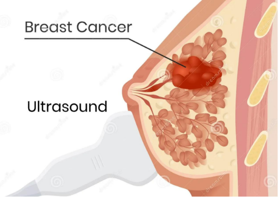
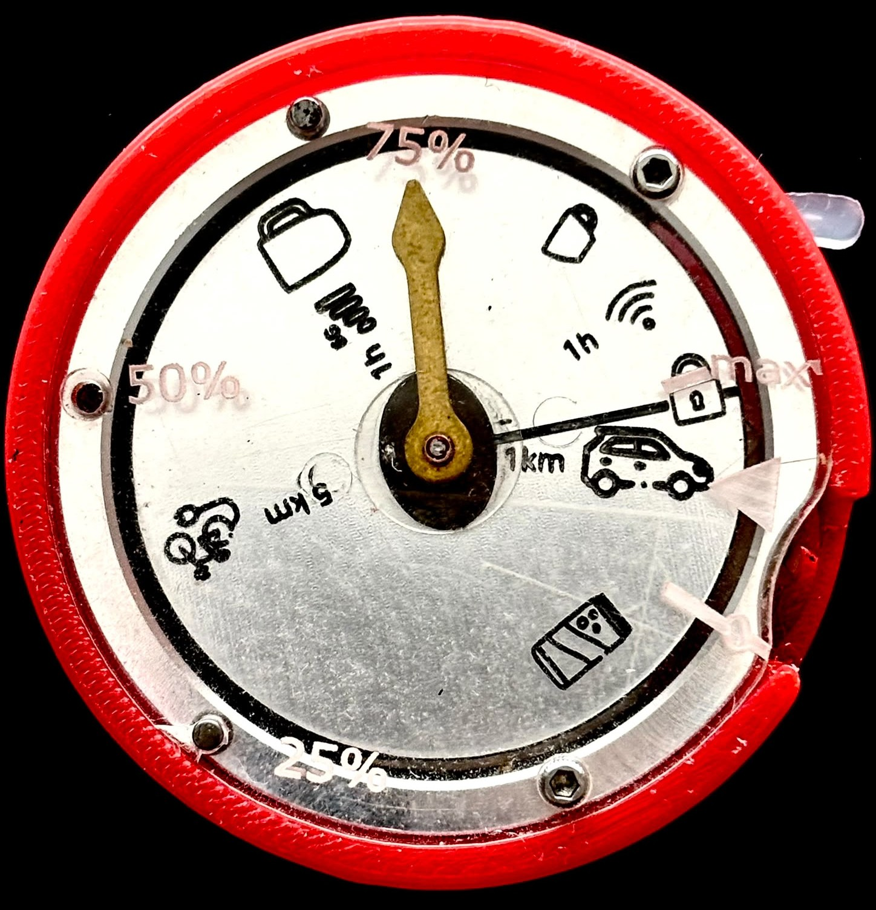
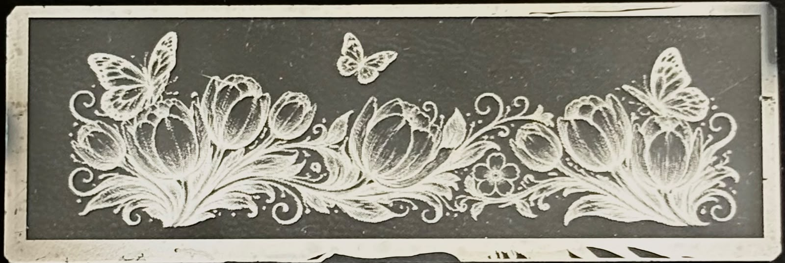

Hey I'm Jeannette
I am
Engineering student specializing in embedded and connected systems. I am interested in electronics, sensors, programming, and the design of smart connected objects that solve real-world problems.

Engineering student specializing in embedded and connected systems. I am interested in electronics, sensors, programming, and the design of smart connected objects that solve real-world problems.
I am an engineering student at Supmicrotech-ENSMM, specializing in embedded and connected systems. My interests include electronics, sensors, programming, signal processing, and the design of smart connected objects.
Through my academic projects, I enjoy combining technical design, experimentation, and problem-solving to create practical engineering solutions.

Building on a pruning shears mechanism I designed, worked in a collaborative team using the Windchill PLM platform to optimize kinematic and fixed joints, refine part geometry via FEA (Ansys Workbench), select materials using the Ashby method and finalize part dimensioning and tolerances.

Designed and validated a proof-of-concept vibrometer based on a homodyne Michelson interferometer, using fringe displacement to detect the bending vibration modes of a cantilever beam, and compared measured resonance frequencies to theoretical predictions.

Developed a Java application to simulate the movement of a crowd in different environments. The project models autonomous agents navigating toward an exit while handling collisions and obstacle avoidance through dedicated movement algorithms.

Simulated the acoustic behavior of a breast ultrasound exam in MATLAB, modeling pulse propagation and echo reflection through layered tissue to detect a simulated lobular carcinoma in situ. Used time-of-flight estimation via cross-correlation and analyzed measurement robustness under varying noise conditions (SNR).

Participated in the design and manufacturing of a carbometer, a device that measures the carbon footprint of various activities. The project involved collaborative work across several manufacturing processes, from CAD and machining to final assembly.

Hands-on introduction to cleanroom microfabrication processes, covering photolithography (resist coating, exposure, development), etching, lift-off and metal electrodeposition, applied to fabricating small metal parts (gears) on glass substrates.)
Feel free to contact me for internship opportunities, engineering projects, or collaborations.
bassenej24@gmail.com